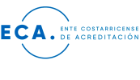
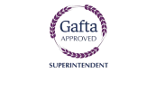
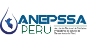
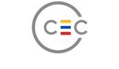
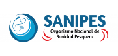
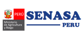

Español
Español
 Inglés
Inglés
 Chino
Chino
INACAL: Instituto Nacional de la Calidad - Somos un Organismo acreditado Principal credencial del Perú que nos reconoce como un laboratorio u organismo de inspección, que está facultado para realizar actividades de ensayo, análisis, inspección y certificación, de esta manera busca asegurar la competencia técnica.
ACREDITACIONES

ECA: Organismo Nacional de Sanidad Pesquera, somos un Organismo de inspección autorizado y nos encargamos de supervisar y fiscalizar los productos de origen hidrobiológico. Como Surveyor autorizado podemos actuar en nombre de ellos en los principales destinos por nuestro entendimiento del proceso productivo y de las normas.
MEMBRESÍAS
IFFO: Miembros no productores en laboratorios y certificaciones, Nuestra membresía fue gracias a nuestro conocimiento y experiencia en la industria de ingredientes marinos y a la recomendación de los lideres en el sector por ser miembros activos de los comités.

GASFTA: Organismo Nacional de Sanidad Pesquera, somos un Organismo de inspección autorizado y nos encargamos de supervisar y fiscalizar los productos de origen hidrobiológico. Como Surveyor autorizado podemos actuar en nombre de ellos en los principales destinos por nuestro entendimiento del proceso productivo y de las normas.
SNI: Organismo Nacional de Sanidad Pesquera, somos un Organismo de inspección autorizado y nos encargamos de supervisar y fiscalizar los productos de origen hidrobiológico. Como Surveyor autorizado podemos actuar en nombre de ellos en los principales destinos por nuestro entendimiento del proceso productivo y de las normas.

ANEPSSA: Organismo Nacional de Sanidad Pesquera, somos un Organismo de inspección autorizado y nos encargamos de supervisar y fiscalizar los productos de origen hidrobiológico. Como Surveyor autorizado podemos actuar en nombre de ellos en los principales destinos por nuestro entendimiento del proceso productivo y de las normas.

CEC: Organismo Nacional de Sanidad Pesquera, somos un Organismo de inspección autorizado y nos encargamos de supervisar y fiscalizar los productos de origen hidrobiológico. Como Surveyor autorizado podemos actuar en nombre de ellos en los principales destinos por nuestro entendimiento del proceso productivo y de las normas.
AUTORIZACIONES

SANIPES: Miembros no productores en laboratorios y certificaciones, Nuestra membresía fue gracias a nuestro conocimiento y experiencia en la industria de ingredientes marinos y a la recomendación de los lideres en el sector por ser miembros activos de los comités.
MINISTERIO DE PRODUCCIÓN: Organismo Nacional de Sanidad Pesquera, somos un Organismo de inspección autorizado y nos encargamos de supervisar y fiscalizar los productos de origen hidrobiológico. Como Surveyor autorizado podemos actuar en nombre de ellos en los principales destinos por nuestro entendimiento del proceso productivo y de las normas.

SENASA: Organismo Nacional de Sanidad Pesquera, somos un Organismo de inspección autorizado y nos encargamos de supervisar y fiscalizar los productos de origen hidrobiológico. Como Surveyor autorizado podemos actuar en nombre de ellos en los principales destinos por nuestro entendimiento del proceso productivo y de las normas.
LA MARINA DEL PERÚ: Organismo Nacional de Sanidad Pesquera, somos un Organismo de inspección autorizado y nos encargamos de supervisar y fiscalizar los productos de origen hidrobiológico. Como Surveyor autorizado podemos actuar en nombre de ellos en los principales destinos por nuestro entendimiento del proceso productivo y de las normas.
AUTORIZACIONES
ISO 9001: Miembros no productores en laboratorios y certificaciones, Nuestra membresía fue gracias a nuestro conocimiento y experiencia en la industria de ingredientes marinos y a la recomendación de los lideres en el sector por ser miembros activos de los comités.
ISO 14001: Miembros no productores en laboratorios y certificaciones, Nuestra membresía fue gracias a nuestro conocimiento y experiencia en la industria de ingredientes marinos y a la recomendación de los lideres en el sector por ser miembros activos de los comités.